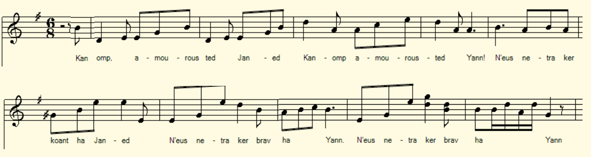
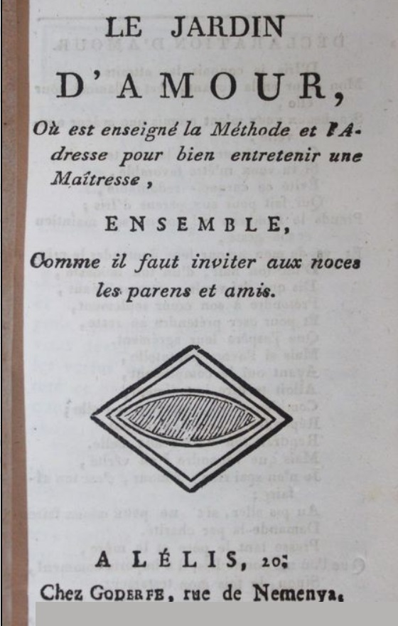

Yann ha Janed
Jean et Jeannette
Chant noté par Théodore Hersart de La Villemarqué
dans le 3ème Carnet de Keransquer (pp. 43-46) .

Mélodie
Chantons les amours de Jean
|
A propos de la mélodie: La mélodie de l'équivalent français de ce chant, "Chantons les amours de Jean" a été publiée par le musicologue J.B. Weckerlin (1821 - 1910) dans son opuscule "Bergerettes, romances et chansons du XVIIIe siècle". Il ne cite malheureusement pas ses sources concernant le présent chant A propos du texte Ce chant référencé M-00582 dans la classification Malrieu des chants en langue bretonne. Cependant le titre qui combine un nom breton (Yann) et un nom français (Jeannette) porte à croire qu'il s'agit de l'adaptation d'un chant français intitulé "Jean et Jeannette". Cette intuition est corroborée par une mention peu lisible, de la main de La Villemarqué, qui suit le texte p.46. On croit lire "(Le Laé ?)". L'abbé Claude-Marie Le Laé (1745 - 1791) est un auteur breton qui a été étudié par Gaston Esnault en 1921 dans "La vie et les oeuvres comiques de Claude-Marie Le Laé". Parmi ces oeuvres comiques figure en bonne place l'"Oraison funèbre de Michel Morin" (Sarmon graet var ar maro a Vikeal Morin) que Lédan [1] a réimprimé. Il semblerait donc que La Villemarqué se demandait s'il ne fallait pas lui attribuer également le présent chant. Les 2 versions du chant breton Le site tob.kan.bzh à la page dédiée à "Yann ha Janed", reproduit 2 études de ce chant: l'une faite par Laurence Berthou-Bécam dans le cadre d'une thèse sur les collectes de langue bretonne incluses dans l'enquête officielle sur les poésies populaires de France (1852-1876). Cette enquête est également connue comme l'enquête Fortoul-Ampère. Les éléments de cette étude datant de 1998 sont repris par Hervé Peaudecerf en 2002 pour une thèse sur l'imprimeur morlaisien Alexandre Lédan. Il résulte de l'examen de ces documents qu'on ne connait que 2 versions bretonnes vraiment distinctes de ce chant: Canomp amourousted Janet / Chantons les amours de Jeanne Canomp amourousted Jan / Chantons les amours de Jean Jan a gar Janet / Jean aimait Jeannette, Janet a gar Jan / Jeannette aimait Jean Mes abaoe me Jan demeet da Janet / Mais depuis que Jean est lépoux de Jeannette Jan ne gar mui Janet / Jean naime plus Jeannette Na Janet Jan / Ni Jeannette Jean. Il est certain que Lédan connaissait louvrage de Cambry, puisquil le mentionne dans une de ses publications de 1834, "Simon a Vontroulez". Il a donc pu utiliser ces sept vers pour créer sa chanson. On retrouve 2 occurrences de ce chant sous le nom de Lédan: - "Yan ha Janned [...]", manuscrit intégré aux "Poésies populaires de la France", 1852, vol. 5, f° 270 r-v dans le cadre de l'enquête Ampère-Fortoul et - "Yan ha Janned, Jardin an Amouroustet, En pelech e tisqer ar fêçon evit antreteni ervat eur Vestrez," Il s"agit d'un opuscule de 16 pages comprenant à la page 14, le fameux poème "Yann ha Janed etc...", référencé par Ollivier sous le n° 1117, dont il y eut 4 éditions au moins. On ne sait pas précisément à quand remonte la 1ère édition de cette brochure. Une déclaration fut déposée par Lédan en 1821, mais non suivie de dépôt et l'ouvrage n'est pas cité dans les catalogues de la librairie de 1834 et 1836, bien qu'une lettre datée de 1836 adressée par le curé de Morlaix, M. Kermanac'h à l'évêque de Quimper en stigmatise le caractère pernicieux. M Peaudecerf s'interroge "Noublions pas que la première édition connue ne porte aucun nom dimprimeur. A-t-il eu peur de certaines réactions ?". La chanson française Laurence Bethou-Bécam semble considérer que Lédan avait trouvé dans la brochure de colportage française "Le jardin dAmour" [4] quil traduisit le modèle de sa composition "Yan ha Janned" ajoutée, pages 14 et 15, au petit livret intitulé "«Jardin an Amouroustet, en pelech etc..." Elle parle en effet d'une "chanson française [...] publiée en 1659 ..." M. Peaudecerf rectifie: "Il est possible que notre imprimeur ait utilisé les quelques vers [de Cambry] pour créer sa chanson, puisque celle-ci nest pas issue de la brochure de colportage française quil traduisit et à laquelle il rajouta sa composition "Yan ha Janned". L'objet du débat est le "Jardin dAmour où il est enseigné la méthode et adresse pour trouver et bien entretenir une maistresse, nouvellement dressé pour lutilité de la jeunesse de lun et lautre sexe». Cet opuscule fut publié pour la 1ère fois à Troyes par Nicolas Oudot en 1659. Le titre en est parfois «Le jardin de lhonnête Amour ou... ». Il est mentionné dans l'étude qu'a faite Alfred Morin du catalogue de la "Bibliothèque Bleue" de Troyes [. Il avai2]t déjà attiré l'attention de Charles Nissard en 1854 qui le mentionne dans son "Histoire de livres populaires". Comme on l'a dit, il ne comprend pas la chanson "Jean et Jeannette". La thèse de Francis Gourvil Dans une publication de 1916, «La chanson bretonne au front, Soniou koz brezonek», Francis Gourvil dit avoir découvert une version de ce chant dans les manuscrits de Lédan de Morlaix. Dans une note, il précise que la pièce est signée de Lédan, mais que cela ne permet pas daffirmer quil en soit lauteur. Ce dernier aurait pu sinspirer de quelques vieux modèle. Dans une édition suivante ("Yann ha Janed. Sonioù kozh brezhoneg: Mouez ar Vro"), 3 ans plus tard, il devient catégorique: Lédan la signée, cependant ce nest quune traduction bretonne dune chanson française du XVIIIe siècle. " Chantons les amours de Jean". Malheureusement, il omet de préciser où il a trouvé cette chanson française. C'est sans doute à la même source qu'a puisé J.B Weckerlin qui donne à la mélodie qu'il publie le même titre. Elle est assortie de paroles françaises nettement différentes de la traduction du chant breton de Lédan; En voici 2 strophes et le refrain: Chantons, chantons les amours de Jeanne Chantons, chantons les amours de Jean Rien n'est si charmant que Jeanne, Rien plus aimable que Jean. REFRAIN: Jean aime Jeanne, Jeanne aime Jean Jean aime Jeanne, Jeanne aime joli Jean. Dans une simple cabanne Comme en un palais tout d'or brillant Jean reçoit l'amour de Jeanne Et Jeanne celui de Jean... |
About the melody: The melody for the French equivalent of this song, "Chantons les amours de Jean" was published by the musicologist J.B. Weckerlin (1821 - 1910) in his pamphlet "Bergerettes, romances et chanson du XVIIIe siècle" . He unfortunately does not cite his sources concerning the present song About the text This song is referenced M-00582 in the Malrieu classification of songs in the Breton language. However the title which combines a Breton name (Yann) and a French name (Jeannette) suggests that it is an adaptation of a French song entitled "Jean et Jeannette". This intuition is corroborated by a barely legible mention, in the hand of La Villemarqué, which follows the text on p.46. We suppose it reads " (Le Laé?) ". Abbé Claude-Marie Le Laé (1745 - 1791) was a Breton author whose work was investigated by Gaston Esnault in 1921 in "Life and comic works of Claude-Marie Le Laé". Among said comic works stands out prominently the "Oraison funèbre de Michel Morin" (Sarmon graet var ar maro a Vikeal Morin) which Lédan [1] has reprinted. It would seem, therefore, that La Villemarqué was wondering whether it was not relevant to also attribute the present song to him. The two versions of the Breton song The tob.kan.bzh site on a page dedicated to "Yann ha Janed", reproduces 2 studies of this song: one made by Laurence Berthou-Bécam as part of her thesis on the Breton language collections included in the official enquiry on popular poetry in France (1852-1876). This survey is also known as the Fortoul-Ampère enquiry. The elements of this study dating from 1998 were taken up by Hervé Peaudecerf in 2002 for a thesis on the Morlaix printer Alexandre Lédan. It appears from the examination of these documents that we only know of 2 really distinct Breton versions of this song: Canomp amourousted Janet / Let us sing the love of Jeanne Canomp amourousted Jan / Let us sing the love of Jean Jan a gar Janet / Jean loves Jeannette, Janet a gar Jan / Jeannette loves Jean Mes abaoe ma Jan demeet da Janet / But since Jean is Jeannette's husband Jan ne gar mui Janet / Jean no longer loves Jeannette Na Janet Jan / Nor does Jeannette love Jean. The poem is entitled "Yann ha Janed pe an diferañs etre an amourouzien hag ar priejoù" (Jean and Jeannette or the difference between lovers and husbands). It is certain that Lédan was familiar with Cambry's work, since he mentions it in one of his publications of 1834, "Simon a Vontroulez". So he might have used these seven lines to create his song. We find 2 occurrences of this song under the name of Lédan: - "Yan ha Janned [...]", manuscript integrated into the "Popular Poems of France", 1852, vol. 5, f ° 270 r-v in the context of the Ampère-Fortoul survey, and - "Yan ha Janned, Jardin an Amouroustet, En pelec'h e tisqer ar fêçon evit antreteni ervat eur Vestrez," This is a 16-page pamphlet including on page 14, the famous poem "Yann ha Janed etc ... ", referenced by Ollivier under n ° 1117, of which there were at least 4 editions. We do not know precisely when the 1st edition of this brochure dates back. A declaration was filed by Lédan in 1821, but not followed by the deposit of the work which is not cited in the bookstore catalogs of 1834 and 1836. But a letter dated 1836 addressed by the priest of Morlaix, Mr. Kermanac'h to the bishop of Quimper stigmatizes the pernicious character of this pamphlet. M Peaudecerf wonders "Why did the first known edition not bear any name of printer? Was Lédan afraid of certain reactions? " A French song Laurence Bethou-Bécam seems to consider that Lédan had found in the French peddling brochure "Le jardin d'Amour" [4] that he translated, the model of his composition "Yan ha Janned" which he added, on pages 14 and 15, to the small booklet entitled "< b> "Jardin an Amouroustet en pelec'h etc ..." She mentions indeed a "French song [...] published in 1659 ..." M. Peaudecerf corrects this statement: "It is possible that our printer used the few lines [of Cambry] to create his song, since the latter does not come from the French peddling brochure that he translated and to which he added his composition "Yan ha Janned". The object of the debate is the "Garden of Love where one is taught the skill and ability to find and properly maintain a mistress, newly drawn up to usefully serve the youth of one and the other sex ". This booklet was published for the first time in Troyes by Nicolas Oudot in 1659. The title is sometimes" The garden of honest Love etc ... " It is mentioned in Alfred Morin's review of the catalog of the "Bibliotheque Bleue" in Troyes [2]. It had already attracted the attention of Charles Nissard in 1854, who mentions it in his "Histoire de livres populaires". as we said, this booklet does not include the song "Jean et Jeannette". Francis Gourvil's thesis In a 1916 publication, "La chanson bretonne au front, Soniou koz brezonek", Francis Gourvil states that he discovered a version of this song in the manuscripts of Lédan in Morlaix. In a note, he specifies that the piece is signed by Lédan, but we cannot infer that he was the author thereof. It could have been inspired by some older models. In an ensuing edition ("Yann ha Janed. Sonioù kozh brezhoneg: Mouez ar Vro"), 3 years later, he becomes categorical: Lédan signed it, however it is only a Breton translation of an 18th century French song titled "Let us sing the love of Jean (=John)". Unfortunately, he fails to specify where he found this French song. It is undoubtedly from the same source that J.B Weckerlin drew, who gives the melody he publishes the same title. It is accompanied by French lyrics clearly different from the translation of Lédan's Breton song; Here are 2 stanzas and the chorus: Let us sing, sing the love of Jeanne (Jenny) Let us sing, sing the love of Jean (John) Nothing is so charming as Jeanne, Nothing more amiable than Jean. REFRAIN: Jean loves Jeanne, Jeanne loves Jean Jean loves Jeanne, Jeanne loves pretty Jean. In a simple cabin As in a golden all-shining palace Jean is graced with the love of Jeanne And Jeanne with that of Jean ... |
|
BREZHONEK p. 43 1. Kanomp amourousted Janed Kanomp amourested Yann Neus netra ker koant ha Janed, Neus netra ker brav ha Yann. 2. Yann a ra bep tra vit Janed Ha Janed pep tra 'vit Yann, Yann a gar holl gant e Janed Janed na gar mann hep Yann. 3. N'eus nemet gourdrouziñ Janed Evit lakaat gouelañ Yann. Evit lakaat c'hoarzhiñ Janed N'eus nemet arlikañ Yann. 4. Yann a aoz al lein gant Janed Janed zo tostig da Yann, Ha kement tra a douch Janed Kerkent zo lipet gant Yann. 5. Gant he dorn gwenn bepret Janed A garg e werenn da Yann, Hag atav skudellig Janed, A zo karget gant he Yann. 6. Ha pa'z a da gousket Janed, Ez a ivez buhan Yann, Yann na gousk ket tost da Janed Na Janed e kever Yann. 7. Kerkent evel ma zav Janed E sav ivez buhan Yann Yann a glask bepred e Janed Ha Janed pepred he Yann. 8. Mar d'eo bep mestrez ur Janed Ha pep amourouz ur Yann Ar wreg zo bepred ur Janed Hag an ozach bepred ur Yann. II 9. Yann zo dimezet da Janed Janed a zo gwreg da Yann... Yann na anavez mui Janed Ha Janed a zianzav Yann. 10. Kement tra 'zeu d'eus-a Janed Zo sur da zisplij da Yann. Pa glevot o choarziñ Janed E klevot o ouelañ Yann. 11. Ar friko a blij da Janed A zav e galon da Yann Hag ar gwele ma gousk Janed Ned'eo ken mui gwele Yann 12. Yann nhell mui bevañ gant Janed Janed en em varv gant Yann, Yann gant Doue garfe Janed Janed, dan diaoul a rofe Yann. 13. An devez ma varvo Janed A vezo devez kaer da Yann Ha na gwelot dañsal Janed, Nemet war bez ar paour Yann. (Le Laé. ?). KLT gant Christian Souchon |
TRADUCTION FRANCAISE p. 43 1. Chantons les amours de Jeannette Et chantons les amours de Jean Rien n'est joli comme Jeannette, Il n'est rien de si beau que Jean. 2. Jean fait vraiment tout pour Jeannette Et Jeannette fait tout pour Jean, Jean aime tout chez sa Jeannette Jeannette n'aime rien sans Jean. 3. Il suffit de gronder Jeannette Pour faire aussitôt pleurer Jean. Veux-tu faire rire Jeannette? Il te suffit d'amuser Jean. 4. Quand Jean cuisine avec Jeannette Jeannette n'est pas loin de Jean, Et tout ce que touche Jeannette Est aussitôt léché par Jean. 5. De sa main blanche on voit Jeannette Qui remplit le verre de Jean, Toujours l'assiette de Jeannette, Est remplie par les soins de Jean. 6. Lorsque va se coucher Jeannette, Bien vite va se coucher Jean, Jean ne dort pas près de Jeannette Ni Jeannette au côté de Jean. 7. Dès que se lèvera Jeannette Bien vite se lèvera Jean. Jean cherche toujours sa Jeannette Et Jeannette toujours son Jean. 8. Toute amante est une Jeannette Et tout amoureux est un Jean. Plus d'une épouse fut Jeannette Plus d'un mari jadis fut Jean. II 9. Un jour Jean épouse Jeannette. Jeannette est la femme de Jean.. Et Jean ne connaît plus Jeannette Et Jeannette, elle, ignore Jean. 10. Tout ce qui concerne Jeannette Ne parvient qu'à déplaire à Jean. Vous entendez rire Jeannette? Vous entendrez donc pleurer Jean. 11. Le festin qui plait à Jeannette Lui soulèver le coeur, à Jean. Le lit où repose Jeannette Ce n'est plus le lit où dort Jean. 12. Si Jean n'en peut plus de Jeannette, Jeannette meurt d'être avec Jean, Au ciel Jean voudrait voir Jeannette. Jeannette voue au diable Jean. 13. Et le jour où mourra Jeannette Sera donc un beau jour pour Jean. Où verra-t-on danser Jeannette? Sur la tombe du pauvre Jean. (Le Laé. ?) Traduction Ch. Souchon (c) 2020 |
ENGLISH TRANSLATION p. 43 1. Let's sing Jeannette's love And sing the love of Jean Nothing is pretty like Jeannette, There is nothing so beautiful as Jean. 2. Jean really does everything for Jeannette And Jeannette does everything for Jean, Jean loves everything about his Jeannette Jeannette loves nothing without Jean. 3. Just scold Jeannette To make Jean cry immediately. Do you want to make Jeannette laugh? You just have to amuse Jean. 4. When Jean cooks with Jeannette Jeannette is not far from Jean, And everything that Jeannette touches Is immediately licked by Jean. 5. With her white hand we see Jeannette Who fills Jean's glass, Always Jeannette's plate, Is filled by the care of Jean. 6. When Jeannette goes to bed, Soon goes to bed Jean, Jean does not sleep near Jeannette Neither Jeannette beside Jean. 7. As soon as Jeannette gets up Soon Jean will get up. Jean will look for his Jeannette And Jeannette always her Jean. 8. Every loving girl is a Jeannette And every loving boy is a Jean. More than one wife was Jeannette More than one husband once was John. II 9. One day Jean marries Jeannette. Jeannette is Jean's wife. And Jean no longer knows Jeannette And Jeannette ignores Jean. 10. Everything about Jeannette Only displeases Jean. Do you hear Jeannette laughing? You will soon hear Jean cry. 11. The feast meal that Jeannette likes Jean finds disgusting. The bed where Jeannette rests This is no longer the bed where Jean sleeps. 12. If Jean is tired of Jeannette, Jeannette would rather live far away from Jean, Jean would like Jeannette to be in heaven. Jeannette vows to the devil Jean. 13. And the day Jeannette will die Will be a beautiful day for Jean. Where will we see Jeannette dancing? On the grave of poor Jean! (Le Laé.?) |
NOTES
|
[1] Alexandre Lédan (1777-1855): s'installe comme imprimeur à Morlaix, sa ville natale, en 1805 et son activité prospère, comme le constate le Pasteur gallois Thomas Price en 1829, grâce à une nombreuse clientèle paysanne bretonnante qui lui achète des feuilles volantes (small tracts) directement ou par l'intermédiaire de colporteurs ou de chanteurs ambulants. Son fils François (1809-1881) lui succède en 1855. Cette activité est reprise par Pierre Lanoé en 1880. Il fut l'un des premiers collecteurs de chansons et de mystères. Il composa de nombreuses chansons. Il traduisit ou adapta de nombreux textes français. Les chansons sur feuilles volantes ont fait l'objet, entre 1938 et 1942, d'un catalogue de Joseph Ollivier qui donne le titre de plus de 1000 chansons dont la plus ancienne est de 1668. La Villemarqué affiche une certaine aversion envers les feuilles volantes. Gourvil a montré de façon convaincante que certains chants du Barzhaz tirent leur origine desdites feuilles. [2] Bibliothèque bleue: A Troyes naquit à la fin du 16ème ou au début du 17ème siècle le "livre populaire pour le colportage" imprimé sur du mauvais papier, mal broché et recouvert d'une feuille bleue, vendu à petit prix. Cette "bibliothèque bleue de Troyes" est rapidement imitée et chaque ville du nord et du centre de la France compte au milieu du 18ème siècle son libraire de colportage. L'inventaire des éditions troyennes a été réalisé en 1974 par Alfred Morin: "Catalogue descriptif de la Bibliothèque Bleue de Troyes" (Genève, Droz). [3] Charles Nisard: fut chargé, sous le Second empire, en application de l'arrêté de Juillet 1852, de surveiller et de censurer la littérature de colportage (tout livre colporté devait être estampillé). C'est à cette occasion qu'il constitua sa collection et qu'il publia l'"Histoire des livres populaires ou de la littérature de colportage depuis le XVe siècle jusqu'à l'établissement de la Commission d'examen des livres du colportage ". Ce fut la première étude publiée sur le sujet. [4] Le Jardin d'amour: Jules Gay (1807 - 188?), dans sa "Bibliographie des ouvrages relatifs à l'amour, aux femmes et au mariage...", indique qu'il s'agit d'une espèce de petit catéchisme, le nec plus ultra de la niaiserie à l'usage de la populace et des paysans... La table des matières est imprimé, au verso du titre : Déclaration d'amour. Ensuite : Le Jardin d'Amour (comme l'amoureux se doit comporter, ses gestes, ses habits) - L'amant ne se doit point fâcher de ses imperfections - L'amant doit fuir et éviter les mauvaises compagnies - En quel lieu l'amant doit chercher une maîtresse - Discours d'amant pour accoster une fille en compagnie de plusieurs autres, et lui déclarer son amitié - L'amant dira les vers suivants en baisant sa maîtresse - Comme l'amant doit saluer et parler à une maîtresse - comme le garçon doit parler au père de son amante ; et après l'avoir salué - Pour donner une bague à sa maîtresse lorsque le contrat est passé - Comme il faut inviter les parents aux noces - les récréations et devis amoureux - etc. La chanson de "Jean et Jeannette n'apparaît nulle part. Ce texte aurait paru pour la première fois dès 1671 et a été plusieurs fois réimprimé au cours du XVIIIe siècle. Il devient alors le petit livret populaire de colportage par excellence, Charles Nisard [3] note à son propos: "Le style en est plus décent ; il est aussi plus gaulois et par conséquent plus naïf. Une sorte dérudition, écho lointain de celle du seizième, y est répandue çà et là, et le ton, qui est assez spirituel, devient parfois dogmatique et sent la controverse. Lauteur est probablement un religieux." |
 |
[1] Alexandre Lédan (1777-1855): repaired as a printer to Morlaix, his birthplace, in 1805 and his activity thrived, as the Welsh Clergyman Thomas Price observed in 1829, thanks to the many Breton transient customers who bought broadside sheets ("small tracts") either there or through peddlers or itinerant singers. His son François (1809-1881) succeeded him in 1855. This activity was taken over by Pierre Lanoé in 1880. He was one of the first collectors of songs and "mysteries". He composed many songs. He also translated or adapted many French texts. His broadside songs were recorded, between 1938 and 1942, on a catalog drawn up by Joseph Ollivier which include the titles of more than 1000 songs, the oldest of which dating back to 1668. Though La Villemarqué claims reluctance to admit broadside literature. Gourvil has convincingly demonstrated that he did find there some of his Barzhaz songs. [2] The Blue Library : It was in Troyes, at the end of the 16th or the beginning of the 17th century, that the "popular books for peddling" were first printed, on bad paper, badly stitched, covered with a blue sheet, and sold at a low price. This "Blue Library books of Troyes" were quickly imitated and every town in the north and center of France had its peddling bookseller, in the middle of the 18th century. The inventory of Troyes printing editions was carried out in 1974 by Alfred Morin : "Descriptive catalog of the Blue Library of Troyes" (Geneva, Droz). [3] Charles Nisard : was charged, under the Second Empire, pursuant to the decree of July 1852, to monitor and censor peddling literature (any book peddled had to be stamped). It was on this occasion that he assembled his collection and published the "History of popular books or peddling literature from the 15th century until the establishment of the Commission for the examination of peddling books". This was the first study published on the subject matter. [4] The Garden of Love : Jules Gay (1807 - 188?), In his "Bibliography of works relating to love, women and marriage. .. ", indicates that this title refers to a kind of small catechism, the ultimate silliness for the use of the populace and the peasants ... The table of contents is printed, on the back of the title page : Declaration of love. Then: The Garden of Love (how the lover should behave, his gestures, his clothes) - The lover should not be angry with his imperfections - The lover should flee and avoid bad company - In what place should a lover look for a mistress - Lover's speech to accost a girl in the company of several others, and declare his friendship to her - The lover will say the following lines while kissing his mistress - How a lover should greet and talk to a mistress - How a young man should speak to his lover's father after he has greeted him - How to give a ring to one's mistress when the contract is concluded - Is it necessary to invite parents to the wedding - Recreations and love quotes - etc. The song "Jean et Jeannette" does not appear anywhere. This text is said to have appeared for the first time in 1671 and was reprinted several times during the 18th century. It then became a popular little peddling book par excellence, Charles Nisard [3]notes about it: "The style is more decent; it is also more genuinely French and therefore more naive. Kind of remote echo of sixteenth century erudition, prevails here and there, and the tone, which is quite spiritual, sometimes becomes dogmatic and sometimes smacks of controversy. The author is probably a cleric." |